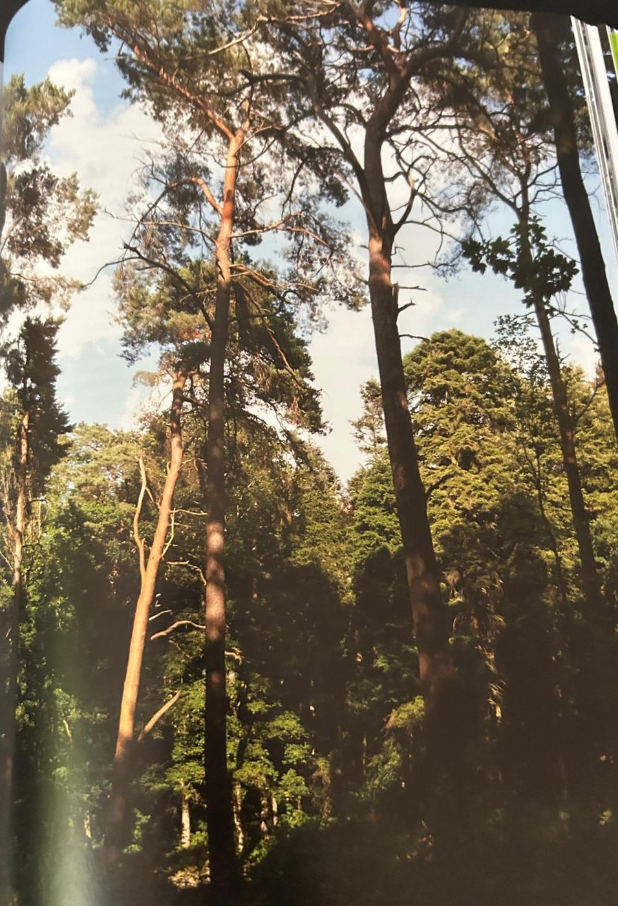

Groepen › Oude Wereld
23. Zuid-Zweden, Götaland

De zuidelijke provincies van Zweden, ook wel bekend onder de historische verzamelnaam Götaland, laaglanden met een overvloed aan meren, vormen de noordelijke distributiegrens van de ons bekende loofboomsoorten als eik en beuk, esdoorn en es. Maar hier komen ook de boomsoorten uit de noordelijke bossen veelvuldig voor: de Fijnspar, de Grove den en de alomtegenwoordige berken, zowel Zachte als Ruwe berk. Naargelang de omstandigheden en de speling van de natuur, ontwikkelen zich mengingen in allerlei vormen, maar door de bosbouw, een belangrijke economische sector in Zweden, is de Fijnspar decennialang bevoordeeld. Gewone jeneverbes, bij ons niet onbekend, maar zeer zeldzaam, is daar een vrij courante gast.
Uit het boek
0,55 ha · 11 soorten · 649 bomen · weerstation Finspång
- Zomereik met fijnspar en grove den, en de oudste jeneverbessen van de collectie.
- Isabella verbood in 1601 het stoken van brandewijn; dezelfde Isabella stichtte het Kapucijnenklooster op 500 m van hier.

Bron: Geografisch Arboretum Tervuren. Een wereldreis rond bomen (2020), p. 196 en volgende.
Deelgroepen
- 23 – Zuid-Zweden
Soorten in deze groep (11)
- Pinus sylvestrisGrove den · 184 bomen
- Quercus roburZomereik · 21 bomen
- Picea abiesFijnspar · 19 bomen
- Juniperus communisGewone jeneverbes · 13 bomen
- Alnus speciesels · 3 bomen
- Betula pendulaRuwe berk · 3 bomen
- Rhamnus frangulaSporkenhout · 2 bomen
- Acer pseudoplatanusGewone esdoorn · 1 boom
- Fagus sylvaticaGewone beuk · 1 boom
- Fraxinus excelsiorGewone es · 1 boom
- Salix capreaBoswilg · 1 boom
Tekst en foto: arboretum-tervuren.be (Koninklijke Schenking), met toestemming gebruikt.